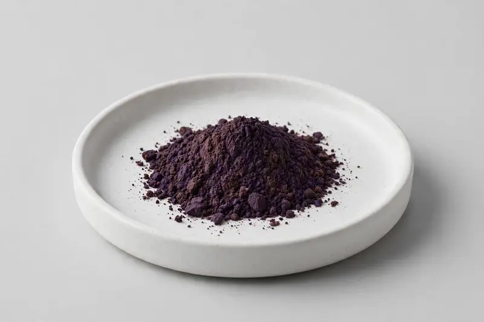

Euterpe oleracea berry, offered for antioxidant berry-oriented formulations.

Overview
Acai Extract is produced from the berry of Euterpe oleracea and is traded either on an extract-ratio basis or standardized to anthocyanins. It is a familiar ingredient in antioxidant berry and superfood concepts across capsules, powders and beverages. Sourcing runs through vetted partner producers, and we confirm ratio or anthocyanin grade, carrier system and testing scope against your target specification.
Specifications below reflect commonly requested options in the market — not a stock list. Share your target spec and we'll confirm exactly what we can supply, honestly.
| Specification | Details |
|---|---|
| Botanical identity | Euterpe oleracea, berry |
| Source material | Berry |
| Marker compound | Anthocyanins — commonly requested: 4:1 extract ratio or anthocyanin-standardized grades; total anthocyanins by UV or HPLC |
| Appearance | Dark purple to deep purple-brown fine powder |
| Analytical methods | Methods referenced in buyer specifications: HPLC, UV |
| Mesh size | Typically 80–100 mesh (confirm per inquiry) |
| Testing | COA/TDS arranged on request; scope agreed per your spec |
Applications
Documentation
We don't claim in-house labs or certifications we don't hold. COA and TDS documents can be arranged on request, and testing scope is agreed against your specification before supply.
FAQ
Related products
Boswellia serrata
Key marker: Boswellic Acids / AKBA
View specs →Astragalus membranaceus
Key marker: Astragaloside IV
View specs →Lycium barbarum
Key marker: LBP
View specs →Myrciaria dubia
Key marker: Natural Vitamin C
View specs →Piper methysticum
Key marker: Kavalactones
View specs →Send your target spec and volumes — we'll respond with a tailored quotation.
Request a Quote